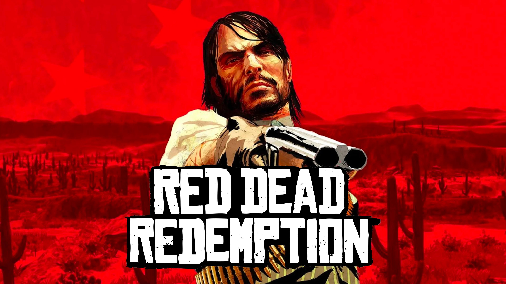
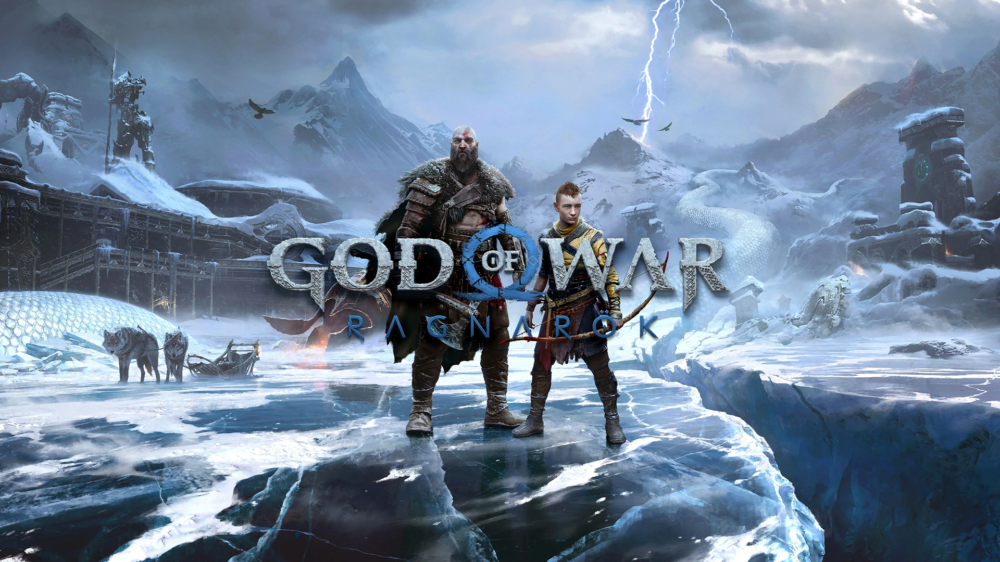
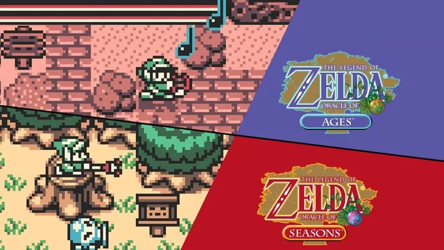
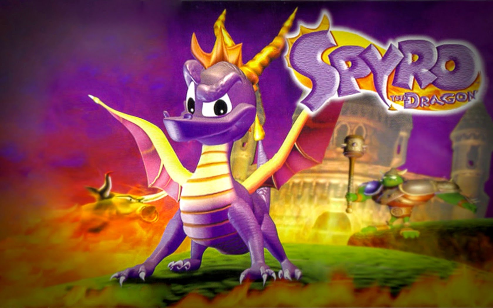
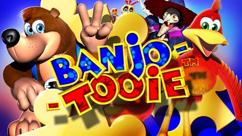
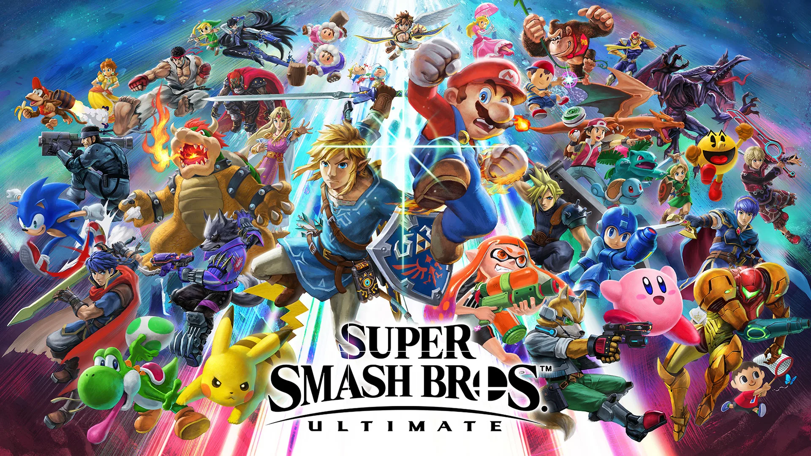
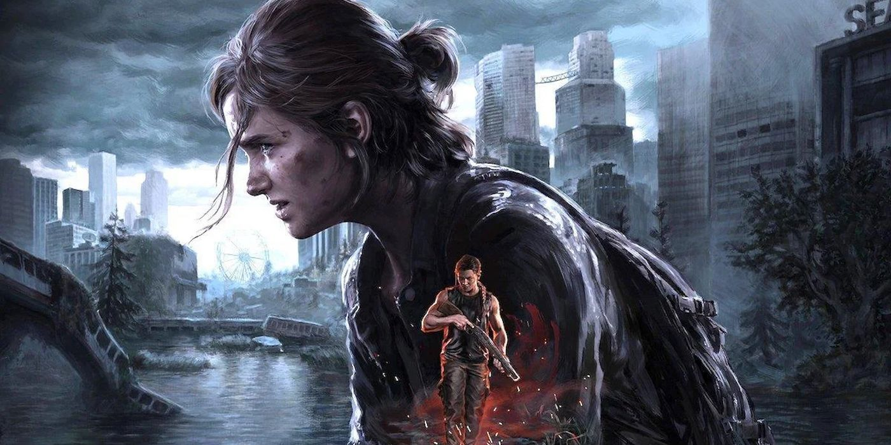

Top 10 Video Games of all time
I'm a pretty big gamer, and I have been for most of my life. My first gaming console was a Playstation 1 that I got as a child, and ever since then gaming has been a big part of my life. I've own every single generation of the Playstation, with the current one being the Playstation 5, and also many Nintendo consoles and more. I love to play retro and modern games, and all different kinds of genres. This list is my personal 10 favorite games I've ever played, and each of these games hold a special place in my heart. Many of these games are nostalic to me, and some are games I've played fairly recently. Also, I am not a fan of turn-based RPGs, or online games, so keep that in mind while reading.
Honorable mentions:
The Legend of Zelda: Breath of the Wild
I am a huge Zelda fan. In order to make this game consistent and fair, I am limiting myself to only include one game per francise. Other, many different Zelda games will probably take up several spots on the list. And it doesn't seem right to have a bunch of Zelda games competing with each other when so many of them are so similar. Maybe one day I will do a Top 10 Zelda games list. But for now, this list will only include one 3D Zelda and one 2D one. So unfortunately, The Legend of Zelda: Breath of the Wild won't make the list. This was the first Zelda game that released whenever I was a fan of the series, and I followed the lead up to this game with the trailers and the E3 livestreams of the game. The freedom this game gives you is incredible, and I will never forget the amazing experience of playing this game for the first time and stepping out of the beginning cave and out into the Great Plateau.
Minecraft
Number 10: Red Dead Redemption
PlayStation/Xbox/Steam

The best francise out there about the wild west, this game really makes you feel like a badass gunslinger....
Most people would probably say that the second game is better than the first. It certainly is bigger and a lot more expanded upon. The second game is probably the most intricate single player games ever made. The amount of detail in everything from the wildlife and the phyics is stunning, and it really feel like your playing a movie. And the story is something truly special; what they acomplished with Arthor is amazing, and probably the best video game voiceover work ever. Both games are great, but the reason I like the first one more is because of the gameplay. In the second game, it feels too much like a movie, and the game feels too easy because of it. There isn't an option to change the difficulty, and with how easy it is to make and or steal money, you're always going to have your dead eye gauge full, making fighting a breeze. The first game on the other hand has a hardcore difficulty option, which I found to be perfect. And the artstyle, story, music and atmosphere of the first game is excellent too.
Number 9: God of War Ragnarök
PlayStation 5/Steam

The God of War francise has the most intricate and satisfying combat in any game I've ever played.
Number 8: The Legend of Zelda: Oracle of Ages/Oracle of Seasons
GameBoy Color

Of course a 2D zelda would have to make the list somewhere. And although they are technically two games, since you have to play through both to get to the true final boss, I'm considering them together. I absolutely love the GameBoy aesthetic of this, the graphics and music are . I also love just how hard and unforgiving this game can be, especially when it comes to the dungeons. Modern Zelda games are way easier nowadays, but this one is just right. and unlike older 2D Zelda titles, the sword comes out fast and snappy, and fighting and using the items feels responsive and intuitive. I love eqiupping both the sword and Roc's cape, so you can hack away with the sword while jumping and gliding around; it feels so right. I completed a four heart challenge of this game, and it made me enjoy the game even more.
Number 7: Crash Bandicoot N. Sane Trilogy
PlayStation/Xbox/Steam/Switch

Number 6: Spyro the Dragon
PlayStation

Yes I'm talking about the very first one on the original PlayStation.
Number 5: Banjo-Tooie
Nintendo 64

Number 4: The Elder Scrolls V: Skyrim
PlayStation/Xbox/Steam/Switch

Number 3: Super Smash Bros. Ultimate
Nintendo Switch

Number 2: The Legend of Zelda: Ocarina of Time

Well here we go, the game is at always at the number 1 spot on these types of lists online. Viewed as the best game of all time by many people, and there is good reason for that.
Number 1: The Last of Us Part 2
PlayStation

The best game of all time, and honestly it isn't even close. The first game was an amazing game as well,
Everything about this game is so dark and beautiful. The environment and vibes of exploring a post-apocolytic and overgrown Seattle is breathtaking.... The story is also incredibly dark, but still beautiful. The gameplay and combat is smooth, fluid, exhilarating. There is only one real negative I have about this game though, and that is the story pacing/outline. The remaster of the game tries to fix this with the new chronological order story mode, but still fails to fix this issue completely